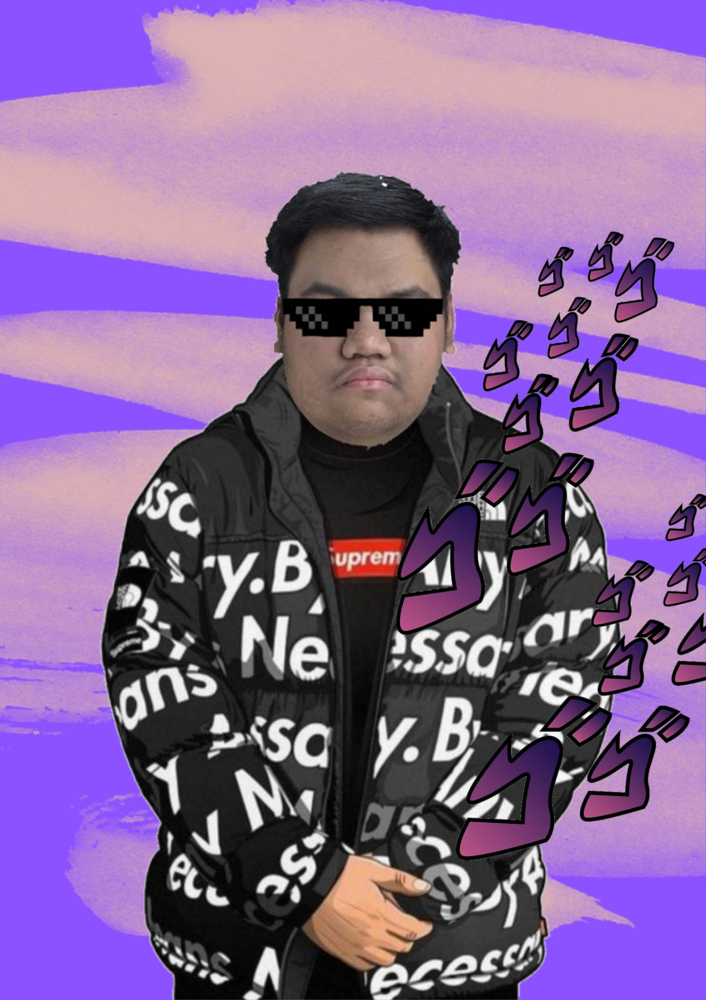
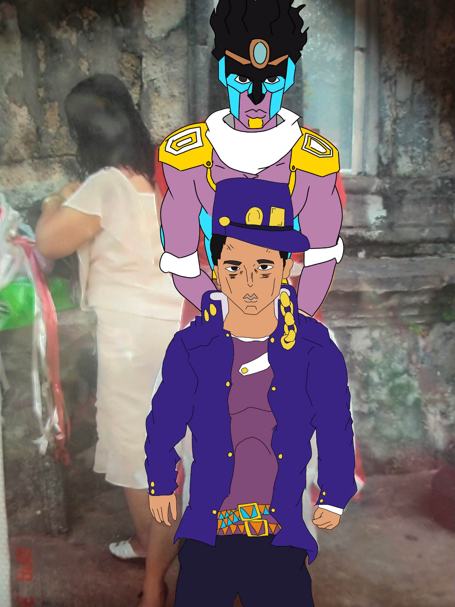
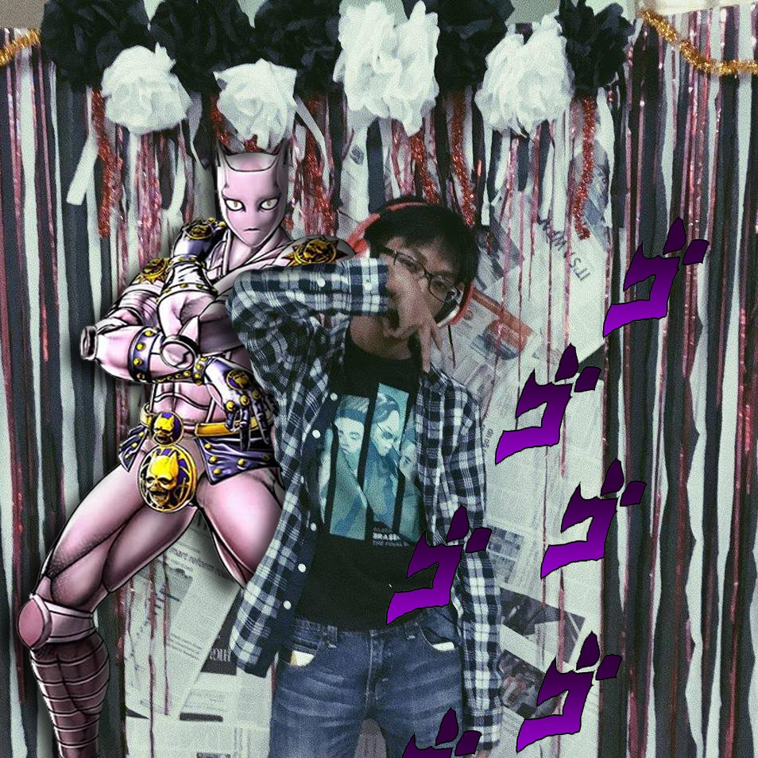

Stand By Me
Home
News
Logs
Shop
About
The Couturiers
James Matthew Dominguez
Michael Casimiro
Jairus De Guzman
Stephen John Asis
Nasyer Vien Andrei R. Dacaynos



Made In Drip
Anomaly
NiGuzman
Aladdin and his Genie
Radio Star
Stand By Me
Stand By Me is a clothing company designed to give the highest quality clothing to people with the strongest of fighting wills. We offer not only the most aesthetically pleasing attire but also the toughest and most aptly fitting in ridiculous fighting situations. But despite the idea that we offer personalized and thus expensive clothing, Stand By Me is an entirely non-profit orginization funded exclusively by the Speedwagon foundation. In an effort to adaptibly fit individuals who are in need of stable clothing to go along with their frequently dangerous excusrions and fights. All the while fitting in the urban environment, as well as being aesthetically pleasing.
In the real world, Stand By Me is a project by 5 friends for their Introduction to Computing finals assessment.
Most of the idea was to make a clothing store that focused on the attire and acquisition thereof of Jojo's Bizarre Adventure Characters and having it sound to be in-universe. As such, most of the things written here, minus some others, are entirely written within the context of Jojo's Bizarre Adventure.